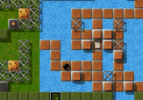
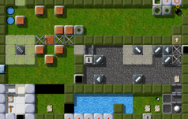

Level of the MonthEach month, we take a closer look at excellent Enigma levels. Excellent levels are those with the highest average user ratings and the greatest number of ratings altogether. Thus it is your vote that determines the Level of the Month. So please rate the levels you play and do not forget to submit your ratings together with your scores at the end of each month. You can find all previous Levels of the Month in our archive. May 2007: “The Aztec Temple” by Dominik Lehmann“Welcome to Chile! Eight hours ago, your plane arrived at the Airport of 'Llamas', which is a small village surrounded by unexplored jungle terrain. Now you find yourself in front of an impressive temple, which seems to be a relic of the ancient Aztec ages. But the temple is in a surprising good condition …” Welcome to the Level of the Month! And enter “The Aztec Temple”!

Enigma VI # 39
3 votes, resulting in an overwhelming 9.33 in April. There is not a single level that polarizes Enigma's community the way “The Aztec Temple” does. A dedicated storyline, wonderful puzzles, interwoven to a great unity versus intangible difficulty and infinite frustration. Just count the forum entries on mag-heut.net here; it's the only two-page-thread in the hints sections! “I still felt a compulsion to come back and explore some more”There are many levels of Enigma that you can look at and immediately know exactly what it is you have to do to solve them. These aren't my favorite levels of the game. I prefer the levels that require exploration and discovery - that unfold before you through trial and error - that offer a solution to you that you have to strive to earn. “Aztec Temple” is one of these. It is a challenging level. You have to execute certain maneuvers exactly right, or you're back to square one. There is a very crucial moment (for me at least) where you have to hit a wood stone just right to avoid recoiling against an impulse stone and ruining all your hard work up until that point. Retrieving the key from the swamp requires some serious focus and agility. And there are rotors to dodge. In Dominik Lehmann's amusing story, those rotors are guard dogs protecting the temple. While not all the facts are historically accurate (the Aztecs never got anywhere near Chile or South America for that matter), his tale is a delightful component in this level. It tells of a scrappy little black marble who takes on a greedy, unscrupulous villain (who looks a lot like a deadly, rotating top), defeats him, and gains access to the inner sanctum of the temple and all its treasure. I know that I want to be just like that true-hearted, valiant marble in my own personal life! In playing “Aztec Temple”, I found myself defeated again and again, but I still felt a compulsion to come back and explore some more while I tried out potential solutions to the many challenging puzzles. I gained access to the inner sanctum a few times before I made all the right moves to enable me to reach the endorphin rush that a solution to a level like this brings with it. “Aztec Temple” is not for the faint of heart, but it's a terrific journey to take with a very satisfying solution. Have a nice journey, and stay calm! That's totally right: The story Dominik tells us through his level somehow makes this level different. He binds us to it, by curiousity of course, but also by means of identification. Most games draw their tension from the identification of the player with some character of a story, and then unfold the story to keep the gamer playing. It's another kind of entertainment, that's sometimes missing in Enigma's rational world. “The Aztec Temple” closes this gap. “There's still one small mystery”Tarim found another delightful aspect of this level:

Rescuing Xila
Aztec Temple is more than just about rolling a marble around; it's a complete alternate reality with some great reversals. The Aztecs are in Chile; their treasure is diamonds and you are a black hero rescuing a white native girl. There are some lovely puzzles which are entangled with each other like the overgrown jungle they're set in. Although the game play can be somewhat unforgiving (one slip and it's shifteffthree time) this just adds to the overall atmosphere. You can spend a long time thinking about what to do next, but if you get it wrong then you've had it; the evil Gerald Gregory Goshers will win and you will never receive any thanks from the delightfully rounded Xila … Having finished it - there's still one small mystery - what to do with the stone you've carefully extracted from the side entrance of the temple? Let's hope it's a clue for Aztec Temple, part 2 (come on Dominik, you know you want to write it). At least I hope so! “'Aztec Temple' outclasses everything we know in this respect”I already pointed at the trench “Aztec Temple” drew through the community. Reflecting this outside world, the trench spread into the developers' circle as well … Aztec Temple surely is the first (and last?) level that talks to the gamer for a long time and tells them a story. The first that doesn't use the documents only to give hints to the player. But it starts a real dialogue and thereby draws the gamer into its mystical world. I think, it is the level with the most “it-documents” :-) The level belongs to a seldom and very suspenseful category of levels, which I want to call “journey levels” or maybe better “levels with story”. It's a level that takes you on a thrilling expedition with lots of smaller and bigger puzzles at the roadside. Of course there are levels that give a similar sensation with their linear layout, like the “Gods of Enigma”. However, “Aztec Temple” outclasses everything we know in this respect. Only too obvious why the level remained unsolved for many weeks after the release of Enigma 1.00. And we asked ourselves, is it really too difficult? Fortunately, “Moneymaker” put us out of this misery. However, till today, only very few players were able to solve “Aztec Temple”. I failed, too. Such a hard level earns a special place, doesn't it? Until recently, it was part of the “mythology” decade in level pack VI. However, with the release of Enigma 1.01 it will meritedly be the master level of pack VI, level number 100. Indeed, “The Aztec Temple” will move from position 39 to 100. There it will still define a counterpoint to the Roman/Greek mythology decade and, in a somewhat deeper sense, to the second decade as well. The hole it leaves in the mythology decade will be filled by a very old level which only shortly appeared in Enigma 0.70, then suddenly disappeared and after its own odyssey found its way back home; but that's another story! ;-) “I didn't plan the level to be this difficult”Although he's heavily busy with school at the moment, Dominik found some time to write us his thoughts on Enigma, level writing and our well known temple: I think, Enigma crossed my way the first time in version 0.70. This was about 4 years ago. Until then, I never saw a game similar to Enigma (like Oxyd). For myself, games are only interesting when I can tinker with them in a creative way, mostly by designing levels. Directly after I started to play Enigma, I wanted to build own levels, too. And due to the lattice-like environment of the game, a level editor seemed quite reasonable. Unfortunately, no editor was integrated in the game, so I took a look at the level files. Awaiting a binary file, I was quite amazed to see a scripting language as an elementary component of the level in my hex editor. I then read Enigma's documentation, which was still rather short in those days. I still found Lua to be too cumbersome and a graphical editor environment not only possible, but indicated. Hence, I searched on mag-heut.net and found the BlackBallED. With this editor I started to build “The Aztec Temple”. After I designed the first room, the controls of this otherwise good editors annoyed me so much that I decided to write one myself. It took quite a long time (3 months or so) until I finished my own editor in VB. This way I could setup the user interface the way I wanted to. With this editor I then finished “The Aztec Temple”. Actually, I didn't plan the level to be this difficult. But I had so many ideas for puzzles in my head, and I wanted to use all of them, without realizing that already their total count would make the level more and more difficult and frustrating. I developed the single components of the level in the sequence in which they're to be solved today. When I finished writing the level I said to myself “Okay, just one time gambling through it, then it's finished”. As I noticed that it's really fierce to solve one of the partly lethal puzzles after the other, it was too late to ease it anymore; just because all the elements are interdependent. I think I needed just as long for solving the level as I did for writing it. Then I got the affirmation that it's difficult, but solvable, I just left it the way it was. And set out to not overcharge my next creations that much. The story the level tells, doesn't really have a background. As I constructed the first room, I thought that I had to explain to the gamer what he sees (as it isn't obvious from graphics that there is some jungle and a temple). Thus I tried to explain with each puzzle, what the elements mean. As I met the purely technically inspired need of adding a second actor, the further course of the randomly started storyline was just a logical consequence. The room in which the white marble started became the “Wild's Cage” all by itself. And a simple “it-document” at the corresponding trigger made the story consistent. Well, as I said. The level is indeed disproportionately hard; however, I have no idea how to change this without affecting the overall structure of it. The flags (being another point of criticism on mag-heut.net) were meant to simulate a kind of save-game function. The shortcuts that result from them are nevertheless undesirable. Dominik added a way to resolve this problem, and some thoughts about an easier easy-mode. We'll discuss this and will hopefully come back with a solution - though not yet with 1.01. We shouldn't rush through providing a better easy-mode, just as the level itself shouldn't be rushed through while gaming. It's a wonderful creation, not neccesarily made for solving, but by all means made for enjoyment! Thank you very much for this jewel of a level, Dominik! Greets, |